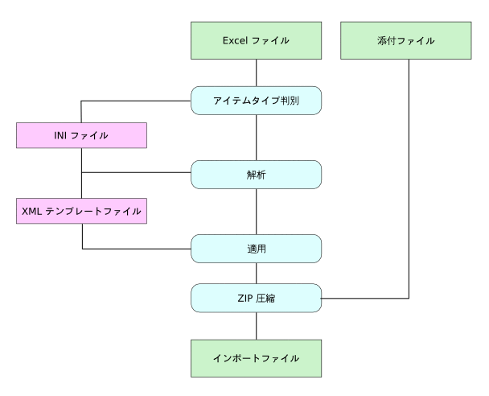

|
 |
第4章 設定ファイル
1. プログラムの動作概要
本プログラムの内部では，入力された 『Excel ファイル』のデータを『INI ファイル』に従い解析，結果を『XML テンプレートファイル』に適用，全てのデータを ZIPにまとめる動作を行います．

『INI ファイル』および『XML テンプレートファイル』は Windows の場合，excel2xoonips.exe の実行プログラムのあるディレクトリ下の 『etc』 ディレクトリを参照します．それ以外の OS の場合は，コンパイル時に configure スクリプトの引数 --sysconfdir で指定したディレクトリを参照します．
2. INI ファイル
2.1. 役割
INI ファイルは，Excel 表内の縦列(カラム)の情報と XooNIps のインポートデータ用の XML テンプレートファイルの変数を対応付けるための定義ファイルです．
プログラム実行時に入力された Excel の Sheet 名に対応する ini ファイル(シート名).ini が自動で読み込まれます．
入力された Excel 表の各セルは INI ファイルの書式に従い，パースされ XML テンプレートファイルの変数にそれぞれ置換されます．
2.2. 書式
ファイル内は以下の書式で Excel 表のカラムの情報を一行毎に記述します．各行を上から順に読み込み，それぞれ Excel 表のカラムに割り当てていきます．
(変数名):(書式):(必須条件) (変数名):(書式):(必須条件) # (コメント) (変数名1,変数名2):(書式):(必須条件) ...:...:... ...:...:... # (コメント) ...:...:...
変数名
-
列データを置換する際の目印となる XML テンプレートファイルの変数名．
-
, で区切ることにより複数の変数名と置換可能．
書式
-
列データの入力を受け付ける書式．
-
以下のいずれかの定数パターンを指定する．
-
string
-
文字列を受け付ける
-
-
int
-
整数値を受け付ける
-
-
bool
-
論理値（『TRUE』/『FALSE』）を受け付ける
-
変数へ置換する際はそれぞれ FALSE = 0, TRUE = 1 となる．
-
-
select(a,b,c)
-
指定された文字列の選択肢 a,b,c のいずれかを受け付ける．
-
a,b,c の部分は任意．
-
-
array(tag) or array(tag,'sep')
-
複数の文字列を配列データとして受け付ける．
-
前者の書式 array(tag) は 後者の書式 array(tag,'\n') と同じ．
-
sep は複数の文字列の区切り文字を表す．ここで \n は改行を表し，C言語と同じ文字列のエスケープ書式を用いる．
-
XooNIps v3.4に変数へ置換する際は配列内のデータをそれぞれ tag に指定された XML タグで囲んで並べたものを利用する．例えば array(title) と指定し，そのセルに複数行の文字列 Line1, Line2, Line3 が指定されている場合，置換後は以下のようになる．
<title>Line1</title><title>Line2</title><title>Line3</title>
-
XooNIps v4.0に変数へ置換する際は配列内のデータをそれぞれ変数名の後尾で囲んで並べたものを利用する．例えば keywords.keyword=array(tag,'#') と指定し，そのセルに複数行の文字列 Keyword1, Keyword2, Keyword3 が指定されている場合，置換後は以下のようになる．
<C:keyword C:type="keyword" C:keyword_id="1">Keyword1</C:keyword> <C:keyword C:type="keyword" C:keyword_id="2">Keyword2</C:keyword> <C:keyword C:type="keyword" C:keyword_id="3">Keyword3</C:keyword>
-
tag および sep の部分は任意．
-
-
dataset(group) or dataset(group,'sep')
-
複数の文字列を配列データセットとして受け付ける．
-
前者の書式 dataset(group) は 後者の書式 dataset(group,'\n') と同じ．
-
sep は複数の文字列の区切り文字を表す．ここで \n は改行を表し，C言語と同じ文字列のエスケープ書式を用いる．
-
変数へ置換する際は配列内のデータに対してそれぞれ group で指定されたデータセット領域を配列数分繰り返して用意し，各フィールドに当てはめる．例えば，テンプレートが
<{dataset $group}> <group> <data><{$data}></data> </group> <{/dataset}>で ini ファイルが
data=dataset(group,'#'):...
となっており，Excel ファイル内の data のセルに d1#d2 のデータが格納されていた場合，以下の様に置換される．
<group> <data>d1</data> </group> <group> <data>d2</data> </group>
-
他のセルの dataset においても同じ group 名を共有できる．ただし，それぞれのセルにおいて同じ配列個数分のデータが必要となる．
-
-
lang
-
言語文字列 (eng,jpn,fra,deu,esl,ita,dut,sve,nor,dan,fin,por, chi,kor)のいずれかを受け付ける．
-
-
file(file_type_name)
-
ローカルホスト上のファイルパスを受け付ける．
-
変数へ置換する際は file_type_name で指定されたファイルタイプを利用し，適切なタグと置き換える．
-
file_type_name の箇所は XooNIps のシステムが持つファイルタイプ識別子を指定する．
-
XooNIps v4.0 には複数ファイルを登録する可能な項目がある.これらの項目は複数のファイル名の区切り文字として改行を使う.
-
XooNIps v3.4 に XML テンプレートファイルでは，以下の変数名のルールでファイルに関する詳細情報を取り出すこともできる．
<{$変数名.original_file_name}> : ファイル名 <{$変数名.mime_type}> : MIME Type <{$変数名.file_size}> : ファイルサイズ <{$変数名.suffix}> : ファイル拡張子
-
-
rights
-
ライセンス情報の文字列をを受け付ける．
-
Some rights reserved (Creative Commons License を指定する場合，CC-BY, CC-BY-SA, CC-BY-ND, CC-BY-NC, CC-BY-NC-SA, CC-BY-NC-ND のいずれかの予約済み文字列を指定する．
-
上記以外の文字列を指定した際は All rights reserved となり自由記述を行う．
-
XML テンプレートファイルでは以下の変数名のルールで Creative Commons License に関する詳細情報を取り出すこともできる．
<{$変数名.use_cc}> : CC 利用の有無 (0:無, 1:有) <{$変数名.cc_commercial_use}> : 商用利用の可否 (0:非, 1:可) <{$変数名.cc_modification}> : 改変・翻訳条件 (0:禁止, 1:同一条件下で許可, 2:許可)
-
-
indexes
-
関連付けるインデックスを受け付ける．
-
/Public もしくは /Private から始まる文字列を指定．
-
複数関連付ける際は，セル内に複数行に渡り記述する．
-
/Private で始まるパスを1つ以上含む必要がある．
-
-
必須条件
-
その列へのデータ入力が必須かどうか．
-
『required』(必須)，『optional』(任意) のいずれかを指定．
コメント
-
『#』 で始まる文字列はコメントとして解釈される．
-
行頭が 『#』 で始まる場合，その行は無視されて次の行を次のカラム情報として引き続き読み込む．
3. XML テンプレートファイル
3.1. 役割
XML テンプレートファイルは，XooNIps のインポートデータ用の XML ファイルの雛型のファイルです．
プログラム実行時に入力された Excel の Sheet 名に対応する tmpl ファイル (シート名.tmpl) が自動で読み込まれます．
プログラムの内部では入力された Excel 表の横列毎に INI ファイルで定義された変数と書式に従い，XML テンプレートファイルで置換されインポート用の XML ファイルとして出力されます．
3.2. 書式
XML テンプレートファイルにはアイテムタイプ毎のインポート用の XML ファイルの雛型を記述します．
変数は <{$ と }> のタグで囲みます（例 <{$variable}>）．システムはこのタグ <{$...}> を目印 に INI ファイルで定義された変数と置換します．
例えば <{$variable}> のタグは INI ファイル内に定義された variable 変数のカラムのデータに変換されます．このとき variable は任意の文字列です．
3.3. 予約済み定義変数
XML テンプレートファイルには，システムが自動で設定する値として以下の 変数が予約されています．
<{$system.item_id}>
Excel 表から XML データを出力する際，Excel ファイル内の全データの通し番号を順に置換します．
<{$system.itemtype}>
アイテムタイプ名(モジュールディレクトリ名) に置換します．
<{$system.now}>
プログラム実行時の日時（ISO8601 準拠の文字列）に置換します．
3.4. 拡張書式
データセット領域 dataset
複数のセルの配列データを配列個数分繰り返しテンプレートに置換したい場合にデータセット領域を利用することができます．
以下の様な拡張書式を用います．
<{dataset $group}>
<group>
<data><{$data}></data>
<name><{$name}></name>
</group>
<{/dataset}>
ここで $group はデータセット領域名，$data, $name 領域内フィールド名を表します．INI ファイル内で領域内フィールド名を指定したセルのデータタイプとして dataset の指定がされている場合，対応するデータセット領域名の <{dataset $group}>〜<{/dataset}> の中身が Excel 表のセルの配列回数分置換されます．
行セット領域 rowset
複数の行のデータを一つのテンプレートに置換する場合に利用します．
以下の様な拡張書式を用います．
<{rowset}>
<index parent_id="<{$parent_id}>" id="<{$index_id}>">
<title><{$title}></title>
</index>
<{/rowset}>
この機能は，インデックスの変換のみに利用しており，アイテムの変換には利用できません．
| |
|
|

|